Diagnóstico del funcionamiento del mercado eléctrico español [Borrador]
A continuación se presenta un análisis preliminar de las características del mercado eléctrico español mediante la identificación de regularidades y tendencias en las series temporales de datos sobre demanda, generación de energía eléctrica y precios de la electricidad y combustibles.
Las fuentes de información utilizadas son: e.sios, OMIE y MIBGAS.
1 Evolución de la demanda de electricidad
En este apartado se analiza la evolución de la demanda horaria y diaria del sistema eléctrico español. Se utilizan los datos de la demanda en barras de central en MWh presentados en e.sios. La frecuencia de los datos es horaria y diaria, y el período de análisis inicia en enero de 2014 y termina en octubre de 2022.
1.1 Demanda horaria
Al descomponer la serie de tiempo de entre su tendencia, estacionalidad y componente aleatorio, encontramos que la estacionalidad de la serie se ha comportado de manera muy similar durante todo el período de análisis. En cuanto a la tendencia de la serie, ésta presentó un comportamiento al alza hasta el 2018, para después estar a la baja hasta el 2021, especialmente durante el 2020 donde sufrió una fuerte caída producto de la pandemia. Desde 2021, la tendencia de la demanda horaria fue al alza hasta inicios de 2022, pero sin recuperar los niveles pre pandemia, y en 2022 ha tenido una tendencia estable.
La reciente menor tendencia de la demanda puede indicar mayores niveles de autoconsumo no registrados en la demanda del sistema.
Al analizar las estadísticas descriptivas de la demanda horaria por año, encontramos, al igual que con la descomposición de la serie, la tendencia al alza de la demanda hasta el 2018, la caída en 2019 y 2020 y la recuperación en 2021 que no alcanza los niveles previos a la pandemia.
| 2014 | 2015 | 2016 | 2017 | 2018 | 2019 | 2020 | 2021 | 2022 | |
|---|---|---|---|---|---|---|---|---|---|
| Mínimo | 18,075.92 | 17,739.48 | 17,693.56 | 18,847.19 | 17,955.34 | 17,531.95 | 16,490.59 | 17,351.85 | 15,815.25 |
| Media | 27,709.57 | 28,275.94 | 28,396.68 | 28,807.85 | 28,919.15 | 28,424.09 | 26,927.06 | 27,652.17 | 26,877.97 |
| Máximo | 38,673.11 | 40,182.98 | 39,997.31 | 40,920.85 | 40,608.00 | 40,068.45 | 39,993.48 | 41,474.55 | 37,973.92 |
| D. Est | 4,499.15 | 4,694.20 | 4,474.26 | 4,573.81 | 4,618.02 | 4,502.87 | 4,644.76 | 4,213.85 | 4,305.82 |
| Sesgo | 0.02 | 0.13 | -0.02 | 0.07 | 0.03 | 0.06 | 0.17 | 0.12 | 0.03 |
| Curtosis | -1.00 | -0.81 | -1.03 | -0.91 | -0.99 | -0.88 | -0.78 | -0.56 | -0.75 |
1.2 Demanda diaria
La descomposición de la serie de la demanda diaria y las estadísticas descriptivas por año exhiben el mismo comportamiento que los datos horarios.

| 2014 | 2015 | 2016 | 2017 | 2018 | 2019 | 2020 | 2021 | 2022 | |
|---|---|---|---|---|---|---|---|---|---|
| Mínimo | 507,590.48 | 517,685.60 | 514,939.89 | 522,066.41 | 530,279.72 | 506,635.69 | 473,012.99 | 512,584.54 | 457,323.84 |
| Media | 665,388.47 | 678,992.38 | 681,888.81 | 691,764.79 | 694,434.42 | 682,551.94 | 646,609.47 | 664,017.70 | 645,341.88 |
| Máximo | 796,146.18 | 821,407.70 | 817,093.32 | 843,152.56 | 836,337.85 | 823,153.42 | 820,108.82 | 834,692.86 | 786,683.30 |
| D. Est | 62,397.10 | 69,137.63 | 61,417.08 | 66,401.74 | 65,518.64 | 65,124.48 | 74,732.47 | 61,410.49 | 67,085.58 |
| Sesgo | -0.36 | -0.07 | -0.43 | -0.28 | -0.31 | -0.21 | -0.16 | -0.07 | -0.23 |
| Curtosis | -0.45 | -0.46 | -0.56 | -0.42 | -0.66 | -0.48 | -0.70 | 0.08 | -0.34 |
Por último, utilizamos un modelo de series de tiempo SARIMA (Seasonal Autoregressive Integrated Moving Average) que busca modelar la demanda diaria teniendo en cuenta efectos estacionales y el comportamiento pasado de la serie. La forma del modelo demuestra altos efectos estacionales y predice el comportamiento de la demanda en los próximos 30 días en azul.
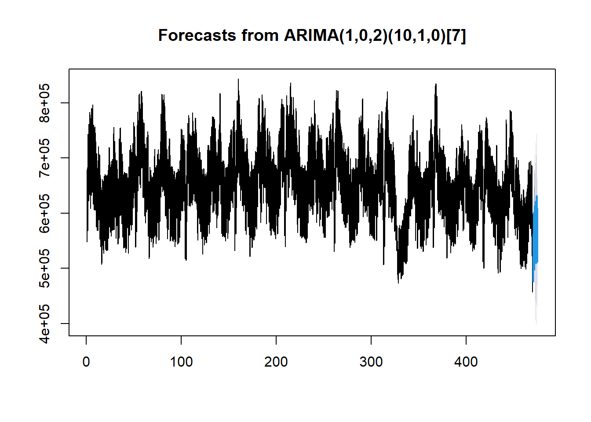
2 Demanda residual y requerimientos de flexibilidad
2.1 Generación no gestionable
Para analizar el comportamiento de los requerimientos de flexibilidad del sistema eléctrico, inicamos calculando la generación renovable no gestionable horaria \((GR)\), que es igual a la suma de la generación eólica, la solar fotovoltaica y la hidráulica fluyente y la analizamos para horizontes de tiempo de una hora \((GR_h - GR_{h-1})\) y de cuatro horas \((GR_{h} - GR_{h-4})\). Esta variación de la aportación de las energías renovables no gestionables puede generar mayor necesidad de flexibilidad en el sistema.
La variación máxima mensual en la generación renovable no gestionable se presenta en la siguiente gráfica. Tanto en horizontes de una y cuatro horas, la variación en la aportación de la \(GR\) ha estado al alza desde finales del 2019.

Ahora calculamos las variaciones en la demanda en horizontes de una hora \((D_h - D_{h-1})\) y cuatro horas\((D_h - D_{h-4})\) . Estos requerimientos brutos de flexibilidad se presentan en la siguiente gráfica.

Los requerimientos netos de flexibilidad o hueco térmico se calculan como las diferencias de \(D-N-GR\) para horizontes de una y cuatro horas, donde \(D\) es la demanda, \(N\) es la generación nuclear y \(GR\) la generación renovable no gestionable. Para los dos horizontes de tiempo se presentan los requerimientos máximos mensuales de flexibilidad netos. Desde el 2021 estos requerimientos se han incrementado levemente (ver estadísticas descriptivas).

| 2014 | 2015 | 2016 | 2017 | 2018 | 2019 | 2020 | 2021 | 2022 | |
|---|---|---|---|---|---|---|---|---|---|
| Mínimo | 2,731.31 | 2,899.70 | 2,611.69 | 2,557.51 | 2,588.85 | 2,517.14 | 2,568.50 | 3,093.50 | 4,157.82 |
| Media | 4,121.89 | 4,188.68 | 4,144.73 | 4,155.45 | 4,214.77 | 4,143.82 | 4,061.14 | 4,385.92 | 5,142.29 |
| Máximo | 5,514.97 | 5,427.68 | 5,561.29 | 5,811.31 | 5,644.70 | 5,604.82 | 5,791.40 | 5,517.66 | 6,161.87 |
| D. Est | 1,004.26 | 927.45 | 1,009.21 | 1,159.71 | 1,085.05 | 1,082.30 | 997.71 | 763.30 | 601.24 |
| Sesgo | -0.17 | -0.01 | -0.21 | 0.01 | -0.23 | -0.13 | 0.07 | -0.22 | 0.08 |
| Curtosis | -1.72 | -1.72 | -1.39 | -1.70 | -1.63 | -1.60 | -1.35 | -1.27 | -1.15 |
| 2014 | 2015 | 2016 | 2017 | 2018 | 2019 | 2020 | 2021 | 2022 | |
|---|---|---|---|---|---|---|---|---|---|
| Mínimo | 8,428.58 | 8,868.48 | 8,342.45 | 8,988.33 | 8,734.65 | 7,793.31 | 7,386.97 | 8,818.16 | 11,257.86 |
| Media | 10,570.17 | 11,099.89 | 10,777.96 | 11,244.52 | 11,468.46 | 10,801.27 | 10,603.83 | 11,597.77 | 13,320.26 |
| Máximo | 13,242.05 | 13,793.00 | 13,906.19 | 14,949.91 | 14,348.45 | 14,004.28 | 14,237.04 | 13,475.20 | 15,705.99 |
| D. Est | 1,721.76 | 1,571.75 | 1,796.25 | 2,123.63 | 2,207.15 | 2,046.45 | 1,910.94 | 1,420.62 | 1,372.56 |
| Sesgo | 0.13 | 0.33 | 0.22 | 0.41 | 0.07 | 0.10 | 0.17 | -0.66 | 0.02 |
| Curtosis | -1.76 | -1.35 | -1.46 | -1.48 | -1.79 | -1.53 | -0.94 | -0.88 | -1.37 |
3 Mix de generación y fuentes de flexibilidad
Para analizar la evolución de las fuentes de generación que aportan la flexibilidad requerida por el sistema, calculamos las variaciones en las aportaciones de la generación hidráulica gestionable \((H)\), la generación de los ciclos combinados \((CC)\) y la generación de centrales térmicas de carbón \((C)\). Para las tres tecnologías calculamos las variaciones en la generación en horizontes de tiempo de una y cuatro horas.
En las siguientes gráficas se presentan las máximas rampas positivas mensuales de las tres fuentes de flexibilidad calculadas y los requerimientos máximos de flexibilidad (demanda residual). Tanto en los horizontes de una hora como de cuatro horas, es evidente la disminución en el aporte de las centrales de carbón. Sin embargo, no es claro gráficamente la evolución de los aportes de la generación hidráulica y de los ciclos combinados.


Por tanto, realizamos un análisis de correlación entre los requerimientos netos de flexibilidad y la generación hidráulica gestionable, así como la correlación entre la demanda residual y la generación de las centrales de ciclos combinados. Para los dos horizontes de tiempo encontramos que en el caso de la generación hidráulica la correlación con la demanda residual estuvo a la baja hasta el 2019. En los años siguientes ha estado relativamente estable entre 0.75 y 0.8. En el caso de los ciclos combinados, hasta el 2020 la correlación estuvo al alza, para después disminuir hasta el 2021. Durante el 2021 y 2022, esta correlación se ha incrementado llegando a valores similares a los previos al 2020 (alrededor de 0.75).
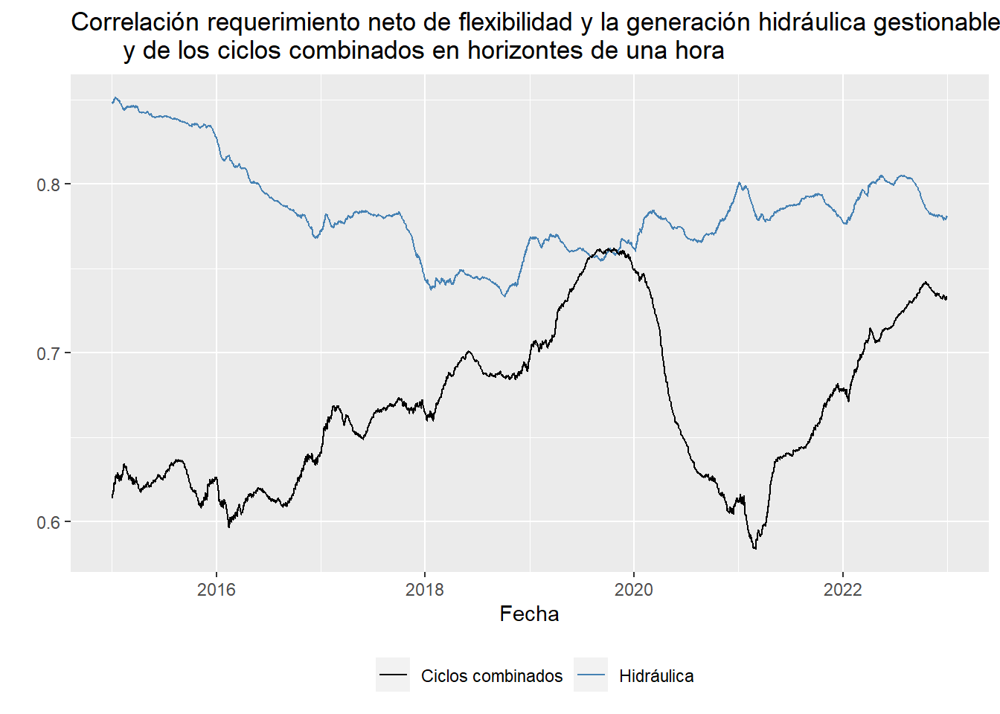
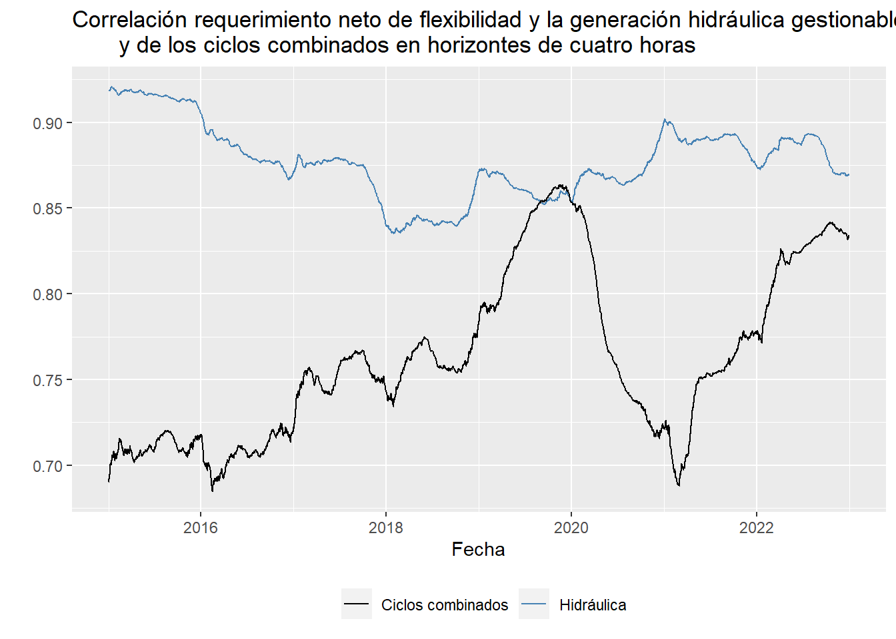
4 Tecnologías marginales
Utilizando los datos disponibles en OMIE calculamos el porcentaje de horas que cada tecnología es marginal para los años 2021 a 2023. En el 2021, la generación hidráulica es la que en mayor porcentaje marcó el precio de la electricidad. En 2022, el porcentaje de horas en que los ciclos combinados marcan el precio se incrementó. De enero a junio de 2023, el comportamiento es similar al de 2021, pero con una mayor participación de la generación renovable, cogeneración y residuos como tecnologías marginales.
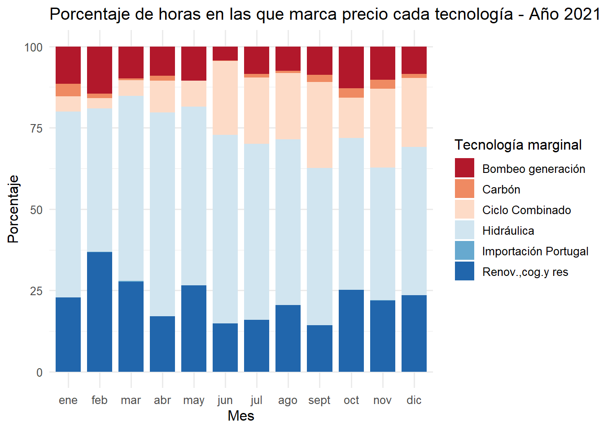

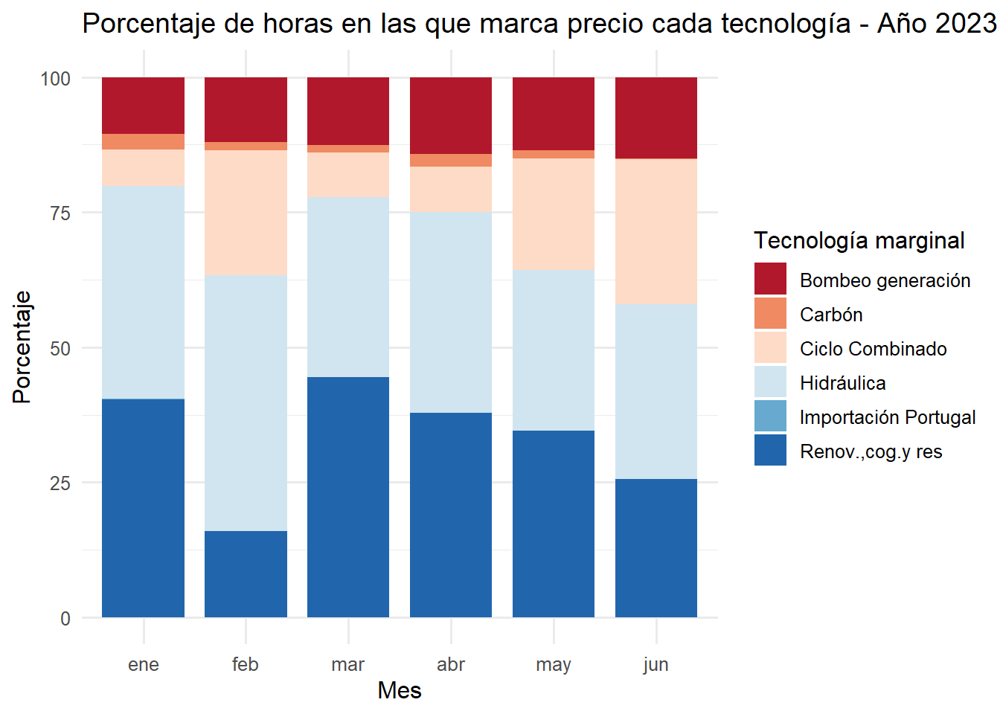
5 Evolución de los precios spot
En es esta sección analizamos el comportamiento de los precios de electricidad en el mercado mayorista español. Utilizamos los datos publicados en e.sios. La frecuencia de los datos es horaria y diaria, y el período de análisis inicia en enero de 2014 y termina en mayo de 2023.
5.1 Precios horarios
Al descomponer la serie de tiempo de los precios horarios entre su tendencia, estacionalidad y componente aleatorio, encontramos como era de esperarse el comportamiento alcista de los datos durante el 2021 y 2022. En las estadísticas descriptivas vemos que la serie de precios tiene una curtosis mayor a tres, indicando que cumple con el hecho estilizado de los precios de electricidad de tener una distribución de colas pesas o con una gran cantidad de datos extremos, tanto en la cola derecha (precios altos) como en la cola izquierda (precios bajos). Además, la serie de precios presenta sesgo positivo, indicando que se concentran más datos hacia la derecha de la media de los precios que hacia la izquierda.

| Precios spot horarios | |
|---|---|
| Mínimo | 0.00 |
| Media | 67.87 |
| Máximo | 700.00 |
| D. Est | 54.81 |
| Sesgo | 2.51 |
| Curtosis | 8.59 |
En el siguiente histograma de los precios se puede ver gráficamente las colas pesadas de la distribución de precios y su sesgo positivo.

5.1.1 Merit-order effect (MOE)
Como una primera aproximación a la estimación del efecto de mérito (merit order effect) estimamos por mínimos cuadrados ordinarios la siguiente regresión:
\[ Precio_h = b_0+b_1Eolica_h+b_2PV_h+b_3Demanda_h+\epsilon_h \]
donde \(Precio_h\) es el precio spot en la hora \(h\), \(Eolica_h\) es la generación eólica en la hora anterior \(h\), \(PV_h\) es la generación solar fotovoltaica en \(h\), \(Demanda_h\) es la demanda y \(\epsilon\) son los errores.
De esta manera, los betas \(b_1\) y \(b_2\) estiman en cuánto disminuyen los precios por cada megavatio hora de electricidad generado con fuentes eólicas o fotovoltaicas, respectivamente.
En la siguiente gráfica se presentan el comportamiento de \(b_1\) y \(b_2\) estimados utilizando una ventana móvil de un año \((k)\)1. Tanto en el caso de la generación eólica como la fotovoltaica, el efecto sobre los precios es negativo durante todo el período de análisis, indicando que a mayor generación con estas fuentes renovables, menores son los precios, pero el efecto es muy pequeño. El efecto de la generación eólica se hizo más grande (en valor absoluto) a finales de 2021, pero durante el 2022 el efecto se hizo pequeño y cercano a cero. Por el contrario, la generación eólica ha tenido un efecto reductor sobre el precio más alto relativo a la generación eólica la mayor parte del período, y tuvo un crecimiento del efecto más pronunciado en 2021 y 2022.
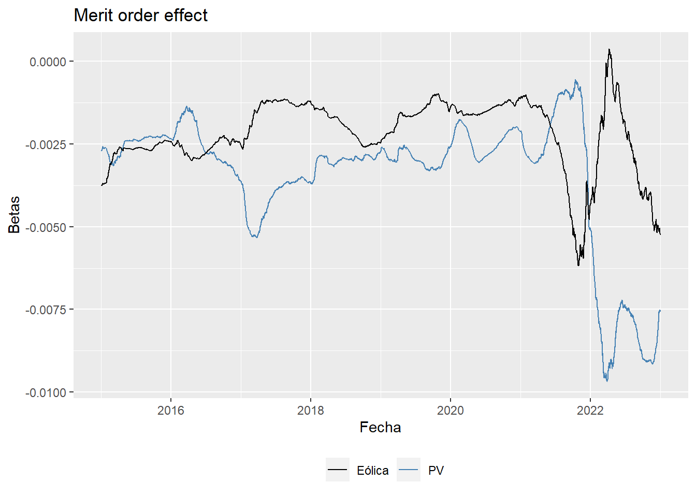
5.2 Precios diarios
La descomposición de la serie de la precios diaros y las estadísticas descriptivas exhiben un comportamiento muy similar al de los datos horarios. Por construcción, el máximo precio es menor al horario, pero se mantienen el comportamiento de colas pesadas y sesgo positivo de la distribución de precios.

| Precios spot diarios | |
|---|---|
| Mínimo | 0.47 |
| Media | 67.87 |
| Máximo | 547.46 |
| Varianza | 2,791.05 |
| D. Est | 52.83 |
| Sesgo | 2.51 |
| Curtosis | 8.33 |
5.2.1 Prueba de quiebres estructurales
Utilizando la metodología de (Bai and Perron 2003) estimamos posibles cambios de régimen o quiebres estructurales en la serie de precios diarios. El modelo encuentra los siguientes cuatro regímenes:
desde el inicio de la muestra en enero de 2014 hasta octubre de 2016
octubre de 2016 hasta abril de 2019
abril de 2019 a agosto de 2021
agosto de 2021 hasta el final de la muestra en mayo de 2023

5.2.2 Modelación de la media y volatilidad
Realizamos también una modelación de la media y varianza de la serie para analizar la tendencia de la volatilidad de los precios diarios. Al igual que en el caso de la demanda, utilizamos un modelo SARIMA para modelar la media de los precios y tener en cuenta los componentes estacionales de la serie. En la siguiente gráfica se presenta en azul el pronóstico del modelo de los precios a 30 días.

Para la modelación de la volatilidad utilizamos un modelo GARCH (Generalized Autoregressive Conditionally Heteroscedasticity). En la siguiente gráfica se presenta la volatilidad estimada por el modelo, donde se puede apreciar el incremento de la volatilidad en los precios durante el 2021 y 2022.
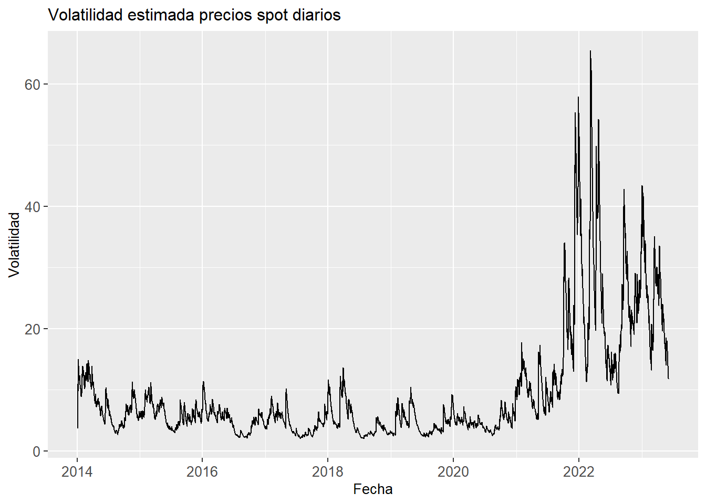
5.2.3 Modelación de los precios con variables explicativas (1)
Como una primera aproximación a un modelo explicativo del comportamiento de los precios, realizamos un modelo de regresión lineal tomando como variables explicativas la generación eólica, fotovoltaica, la demanda, los precios del gas natural y el carbón (EUA). La especificación del modelo es la siguiente:
\[ \begin{align} Precio_t= & b_o+b_1Eolica_{t-1}+b_2PV_{t-1}+b_3Demanda_{t-1} \\ & + b_4Gas_{t-1}+b_5EUA_{t-1}+\epsilon_{t-1} \end{align} \]
Las variables explicativas se rezagan un día para tener en cuenta el modo en el que se forman los precios al por mayor. Los precios del gas natural fueron extraídos de MIBGAS y los precios del carbono (European Union Allowances) de Investing.
A continuación se presentan los resultados de la regresión, donde se tiene una relación negativa entre la generación renovable y los precios, y positiva entre los precios del gas y carbono y los precios de la electricidad. Es importante tener en cuenta que estos resultados sólo se pueden interpretar como correlaciones parciales y no como efectos causales, pues existen sesgos debido a que la causalidad entre los precios y las variables explicativas puede ir en ambas direcciones.
===============================================
Dependent variable:
---------------------------
PrecioSpot
-----------------------------------------------
LEolica -0.0001***
(0.00001)
LPV -0.0003***
(0.00004)
LDemanda 0.0001***
(0.00001)
LGas 1.056***
(0.032)
LEUA 0.940***
(0.054)
Constant -5.263
(9.724)
-----------------------------------------------
Observations 1,800
R2 0.778
Adjusted R2 0.778
Residual Std. Error 28.250 (df = 1794)
F Statistic 1,259.445*** (df = 5; 1794)
===============================================
Note: *p<0.1; **p<0.05; ***p<0.015.2.4 Modelación de los precios con variables explicativas (2)
Adicionalmente, estimamos un segundo modelo de regresión lineal con variables climáticas como variables explicativas, para evitar los sesgos de estimación del modelo anterior. Los datos de temperatura (grados celsius), velocidad del viento (metros por segundo) y precipitación (milímetros) son extraidos de Bloomberg, y los datos de Irradiancia \((Wh/m^2)\) de SoDa Pro. La especificación del modelo es la siguiente:
\[ \begin{align} Precio_t= & b_o+b_1Temperatura_{t-1}+b_2Viento_{t-1}+b_3Precipitacion_{t-1} \\ & +b_4Irradiancia_{t-1}+b_5Gas_{t-1}+b_6EUA_{t-1}+\epsilon_{t-1} \end{align} \]
El modelo encuentra una relación negativa entre la velocidad del viento y los precios, así como entre la radiación solar y los precios. Al igual que en el modelo anterior, los precios del gas y el carbono tienen una relación positiva con los precios.
Dado que estos modelos son lineales y se calculan para la medida de la distribución de precios, vale la pena explorar posteriormente modelos no lineales, como las regresiones cuantílicas, que estiman el efecto de las variables explicativas a lo largo de toda la distribución de precios, permitiendo así, por ejemplo, evaluar la relación del clima y los precios del gas natural cuando los precios de la electricidad son muy bajos o muy altos.
===============================================
Dependent variable:
---------------------------
PrecioSpot
-----------------------------------------------
LTemperatura -0.823***
(0.152)
LViento -1.744***
(0.370)
LPrecipitacion -0.002
(0.002)
LIrradiancia -0.001**
(0.0004)
LGas 1.095***
(0.030)
LEUA 0.753***
(0.041)
Constant 45.530***
(2.908)
-----------------------------------------------
Observations 1,756
R2 0.810
Adjusted R2 0.810
Residual Std. Error 26.231 (df = 1749)
F Statistic 1,244.983*** (df = 6; 1749)
===============================================
Note: *p<0.1; **p<0.05; ***p<0.016 Análisis de la curva de pato
6.1 Curva de pato
En la siguiente gráfica interactiva presentamos la curva de pato para el perfil de demanda del sistema por horas y para los precios spot. La gráfica se puede filtrar por los años de la muestra, días laborales y no laborales, los días de la semana y las estaciones2.
Dado que los años 2021 y 2022 son atípicos por los altos niveles de los precios spot, en la siguiente gráfica presentamos el porcentaje de veces que los precios estuvieron por debajo de 10 EUR/MWh a lo largo del día el 2014, 2015, 2022 y 2023. De enero a mayo de 2023 se evidencia un comportamiento de un mayor porcentaje de precios bajos entre las 7:00 y las 16:00 horas, indicando el efecto de la mayor penetración de la generación fotovoltaica sobre los precios horarios.

6.2 Perfil de consumo de las centrales de bombeo
La siguiente gráfica interactiva presenta el perfil de consumo de las centrales de bombeo. El 2023 se caracteriza por un mayor consumo de estas centrales entre las 7:00 y las 16:00 horas.
7 Indicador de almacenamiento o arbitraje entre horas pico y horas valle
En este apartado calculamos dos indicadores de almacenamiento o arbitraje entre horas pico y horas valle. El primero es la diferencia por día entre el precio horario máximo y el mínimo. El segundo es la diferencia entre el promedio de los cuatro precios más altos del día y el promedio de los cuatro precios más bajos.
Ambos indicadores tienen un comportamiento muy similar. En el caso del primer indicador, por ejemplo, podemos ver que la diferencia entre el precio horario máximo y mínimo pasó de ser en promedio 28 EUR/MWh en 2014 a 83 EUR/MWh en 2023.
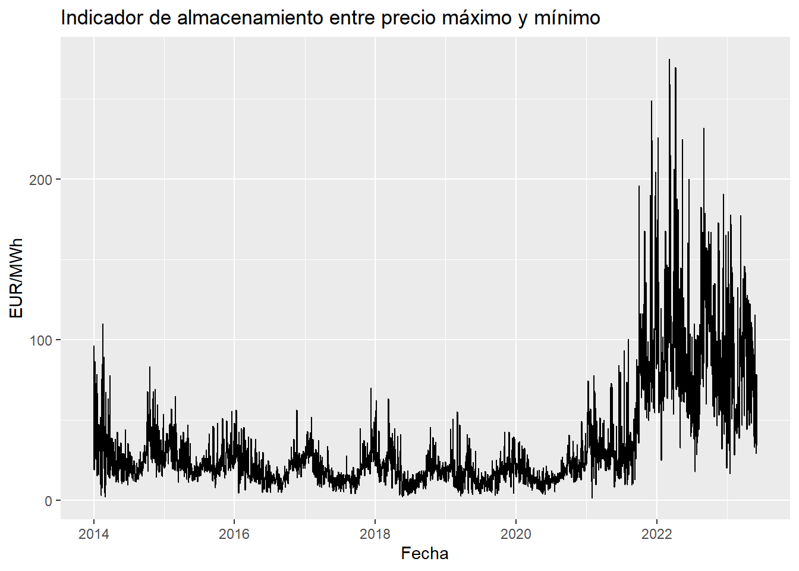
| 2014 | 2015 | 2016 | 2017 | 2018 | 2019 | 2020 | 2021 | 2022 | 2023 | |
|---|---|---|---|---|---|---|---|---|---|---|
| Mínimo | 2.53 | 7.76 | 4.59 | 4.19 | 2.43 | 2.70 | 3.77 | 1.80 | 17.85 | 16.85 |
| Media | 29.72 | 25.46 | 19.47 | 19.84 | 18.78 | 17.20 | 17.25 | 50.97 | 95.81 | 83.02 |
| Máximo | 110.00 | 65.15 | 56.63 | 70.24 | 63.30 | 55.23 | 49.49 | 248.98 | 275.12 | 177.81 |
| D. Est | 16.33 | 9.13 | 8.66 | 9.51 | 9.41 | 8.25 | 7.10 | 37.77 | 43.73 | 34.04 |
| Sesgo | 1.64 | 0.98 | 1.08 | 1.08 | 1.37 | 1.16 | 1.00 | 2.00 | 1.28 | 0.50 |
| Curtosis | 3.39 | 1.02 | 1.72 | 1.76 | 3.40 | 2.42 | 1.55 | 5.14 | 2.10 | -0.38 |
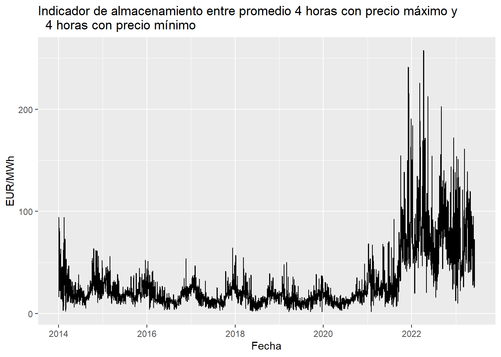
| 2014 | 2015 | 2016 | 2017 | 2018 | 2019 | 2020 | 2021 | 2022 | 2023 | |
|---|---|---|---|---|---|---|---|---|---|---|
| Mínimo | 2.26 | 6.54 | 3.44 | 2.77 | 2.19 | 1.70 | 2.75 | 1.80 | 12.46 | 10.12 |
| Media | 25.37 | 22.12 | 16.71 | 17.42 | 16.37 | 14.80 | 14.52 | 43.04 | 79.42 | 70.73 |
| Máximo | 94.47 | 56.04 | 53.96 | 64.45 | 57.20 | 50.23 | 48.62 | 241.44 | 257.84 | 161.19 |
| D. Est | 14.33 | 8.04 | 7.78 | 8.72 | 8.49 | 7.43 | 6.41 | 33.02 | 36.82 | 30.82 |
| Sesgo | 1.65 | 0.91 | 1.19 | 1.11 | 1.45 | 1.15 | 1.11 | 2.17 | 1.52 | 0.57 |
| Curtosis | 3.80 | 1.02 | 2.47 | 2.02 | 4.03 | 2.54 | 2.55 | 6.96 | 3.47 | -0.34 |
8 Correlación entre los precios del gas natural y de la electricidad
En la siguiente gráfica presentamos la correlación entre los precios del gas natural y de la electricidad. La linea azul punteada corresponde a la fecha en la que se aprobó el Real Decreto-ley 10/2022, de 13 de mayo, decreto conocido como la “excepción ibérica” o el “tope al gas”.

9 Evolución del “Spark Spread”
En esta sección calculamos el “Spark Spread” de una planta de generación de energía eléctrica con gas natural. El “Spark Spread” o la rentabilidad teórica (margen bruto) diaria de la planta se calcula de la siguiente manera:
\[ Spark \: Spread_t = Precio \: electricidad_t - Coste\: variable_t \]
donde el coste variable es igual a: \(Precio\:gas_{t}/Eficiencia \: del \: ciclo + 0.3*Precio \: carbono_{t}\). En este caso tomamos una eficiencia de 0.5.
En la siguiente gráfica se presenta el Spark Spread, los precios de electricidad y los precios del gas natural. Además, se presentan las respectivas estadísticas descriptivas. El spark spread en promedio ha sido negativo, con un valor de -2.37 EUR/MWh, llegando a un minímo de casi -300 EUR/MWh en el 2022.
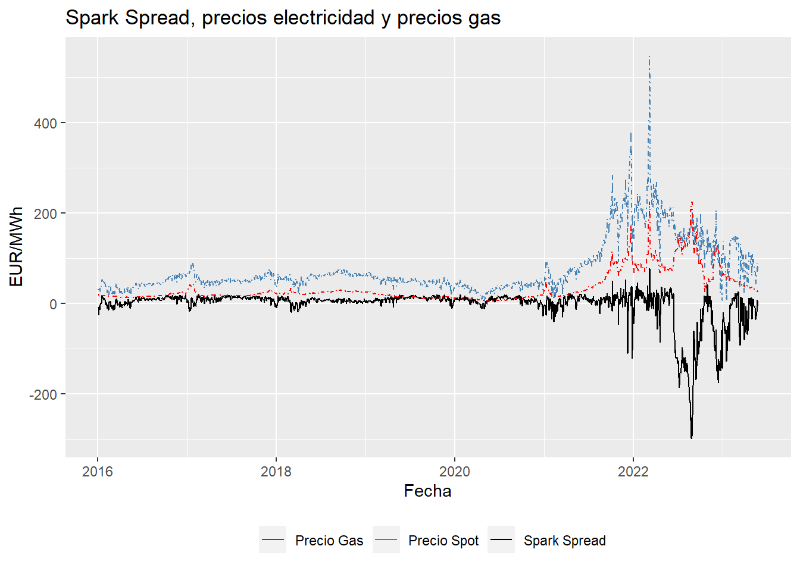
| Precio Electricidad | Precio Gas | EUA | Spark Spread | Coste Variable | |
|---|---|---|---|---|---|
| Mínimo | 5.08 | 4.60 | 3.93 | -298.47 | 15.86 |
| Media | 77.00 | 34.59 | 33.98 | -2.37 | 79.37 |
| Máximo | 547.46 | 225.03 | 98.01 | 78.14 | 476.06 |
| D. Est | 59.03 | 34.34 | 28.66 | 38.08 | 75.26 |
| Sesgo | 2.20 | 2.24 | 0.83 | -3.80 | 2.07 |
| Curtosis | 6.36 | 5.43 | -0.70 | 16.71 | 4.35 |
En el histograma se puede evidenciar el sesgo negativo de la serie del Spark Spread, donde se tienen más datos a la izquierda de la media de la distribución que a la derecha. Además, la mayoría de los días este margen estuvo alrededor de los 0 EUR/MWh.

10 Relación entre el precio spot diario y los servicios complementarios
En esta sección analizamos la evolución de los precios en el mercado intradiario y su correlación con el precio spot diario. Además, analizamos el coste de los servicios de ajuste y su relación con el precio final de la energía.
10.1 Mercado spot intradiario
A continuación presentamos el total de energía asignada en el mercado spot intradiario y el porcentaje de la energía asignada en la sesión 1. Del 2014 al 2020, la energía asignada en la sesión 1 correspondió alrededor del 40-60% de la energía total asignada en el mercado intradiario. A partir del 2020, la ratio cambió, situándose la mayor parte del tiempo entre el 20 y el 40%. Además, en estos últimos años se presentan mayores picos o porcentajes más altos que el promedio.


Dado que en la sesión 1 del mercado spot intradiario se asigna un porcentaje importante de la energía total asignada en el mercado intradiario, analizamos el comportamiento de los precios de esta sesión. A continuación presentamos las estadísticas descriptivas de los precios horarios del mercado spot diario y del mercado spot intradiario de la sesión 1, así como sus respectivas gráficas. Adicionalmente, presentamos la correlación entre los dos precios. La correlación es bastante elevada, oscilando entre 0.95 y 1, con valores más cercanos a uno en los últimos años.
| Precio spot diairio | Precio spot intradiario S1 | |
|---|---|---|
| Mínimo | 0.00 | -23.50 |
| Media | 67.87 | 67.39 |
| Máximo | 700.00 | 750.00 |
| D. Est | 54.81 | 54.60 |
| Sesgo | 2.51 | 2.53 |
| Curtosis | 8.59 | 8.93 |


10.2 Coste de los servicios de ajuste
Tomando los datos de REE graficamos la evolución de los costes de servicio de ajuste mensuales desde 2014 hasta agosto de 2023. Además, presentamos el porcentaje del estos costes del total del precio de cierre de la energía.
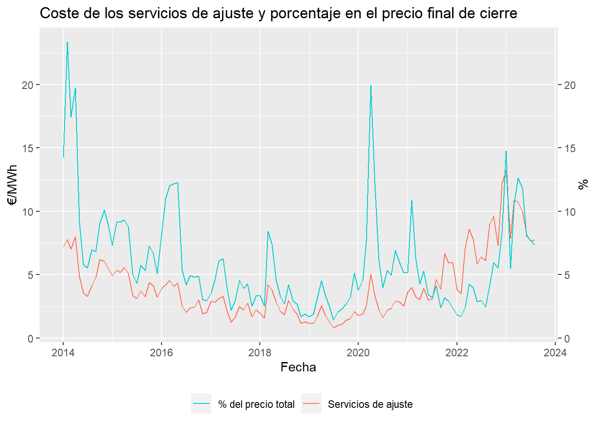
References
Bai, Jushan, and Pierre Perron. 2003. “Computation and Analysis of Multiple Structural Change Models.” Journal of Applied Econometrics 18 (1): 1–22. https://doi.org/https://doi.org/10.1002/jae.659.
Footnotes
La primera ventana móvil contiene datos desde la primera hora del primer día de análisis hasta la última hora del primer año, es decir, del dato \(1\) hasta el \(k\). La segunda ventana móvil tiene observaciones desde el dato \(2\) hasta el \(k+1\), y así sucesivamente.↩︎
El otoño se toma hasta el 31 de diciembre y el invierno inicia el 1 de enero.↩︎